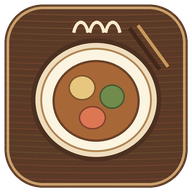

うちのごはん
基本のレシピから、わが家の味を育てる料理帳
🔎 レシピ検索
検索結果から気に入ったレシピを開き、「レシピ追加」から材料・作り方・元サイトURLを保存できます。
📖 レシピ一覧
基本は4人前・控えめな味付け。材料の分量は人数に合わせて計算できます。
写真がない基本レシピには、料理の盛り付け参考写真（イメージ）を表示します。実際の完成写真とは異なる場合があります。
🍽 朝食・昼食・夕食の献立
食事ごとに予算を別々に設定して、人数に合わせた献立を提案します。
🤖 AI・ネット自動検索の接続
ネット検索で和食・洋食・中華・韓国料理・エスニックなど幅広いレシピを探し、AIが材料・分量・作り方の不足を補って献立にします。無料枠を利用するため、利用上限に達したときは時間をおいて再試行してください。
🏠 家にある食材リスト
ここに登録した食材は、買い物リストから自動で除外します。
期限を入力すると、期限が近い食材を優先して献立に使います。期限が不明なら空欄でOK。
🥗 栄養バランスは材料名から主食・たんぱく源・野菜の有無を確認する簡易目安です。カロリーや栄養素の実測値ではありません。
予算は食事ごとに設定します。登録レシピの価格を4人前基準で人数換算した概算です。価格情報がないレシピは金額に含まれない場合があります。実際の価格は地域・季節・購入店で変わります。
🍱 お弁当の献立
主菜・副菜・卵料理を組み合わせて、平日5日分のお弁当案を作れます。
お弁当向けの提案です。汁気をよく切り、十分に冷ましてから詰め、保冷剤を使ってください。生もの・半熟卵は避けてください。
＋ レシピを追加
自分で作った料理も、ネットで見つけたレシピも、ここにまとめて保存できます。
写真は自動で小さくして保存します。写真がなくても登録できます。
🌐 ネットのレシピをそのまま取り込む
Safariで見つけたレシピページのURLを貼って「読み込んで保存」を押すだけ。料理名・材料・作り方を自動入力して保存するよ。
URL取り込みに対応していないサイトでは、下の入力欄に材料と作り方を貼り付けて保存できます。元サイトのURLも一緒に記録します。
⭐ お気に入り・アレンジ記録
まだ保存したレシピはありません。
📅 保存した献立の記録
まだ保存した献立はありません。
🍳 作った料理・献立の履歴
まだ調理履歴はありません。